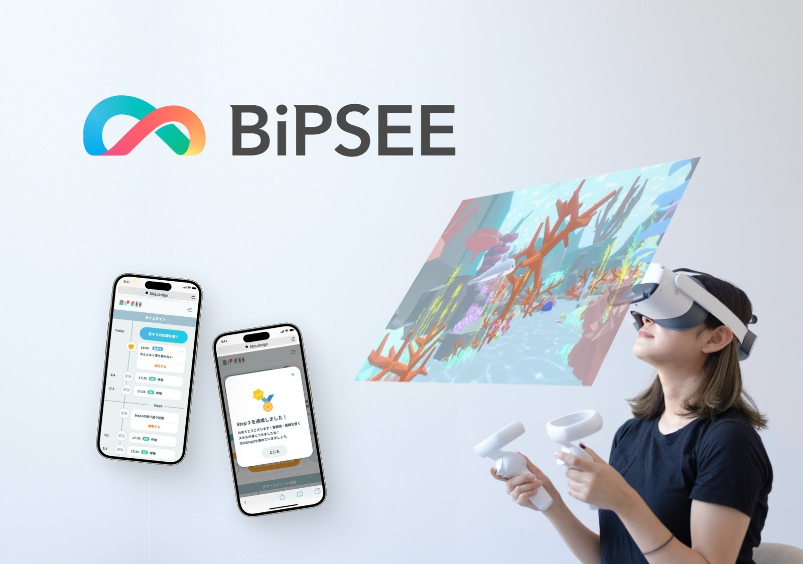

反すう（考えの堂々巡り）に焦点を当てた認知行動療法を、VRゴーグルとスマートフォンアプリで自宅で続けられるよう設計した、うつ病向けのVRデジタル療法。プログラム医療機器として開発中で、株式会社BiPSEEの取締役CPOとしてプロダクトの研究開発を統括しています。

反すう（考えの堂々巡り）に焦点を当てた認知行動療法を、VRゴーグルとスマートフォンアプリで自宅で続けられる治療として設計し、自宅での取り組みを医師用画面で診察に共有できるようにしました。株式会社BiPSEEと高知大学医学部で2021年から、ソフトウェアの医療機器（プログラム医療機器）として、薬事承認に向けて開発しています。
2024年1月に、厚生労働省「プログラム医療機器に係る優先的な審査等の対象品目」に指定されました。多施設共同の探索的試験（47例）を経て、2026年4月に検証的治験の治験届を医薬品医療機器総合機構（PMDA）に提出しています。
株式会社BiPSEE（第二種医療機器製造販売業者）の取締役CPOとして、プロダクト設計開発・品質保証・臨床開発の各部門を管掌しています。この療法では、プロダクトの研究開発統括として、体験設計・ソフトウェア開発から品質保証・臨床開発までを統括し、デザイン・開発・設計を担当しています。
心療内科・精神科の医師と相談しながら、課題の整理、要件の定義、体験の設計、試作、検証の順に進めました。
診察だけではアセスメントできない課題に注目しました。認知行動療法は週1回・30分の通院が前提で、スキルの習得も難しいため、治療が届きにくい理由を整理しました。
反すうに焦点を絞り、「自宅で、1日1回15分以内、8週間続けられること」を要件にしました。
VRの没入と視点の移動を使って、7つのスキルを体験にしました。海の生き物を目で追って注意を練習する場面などを用意しています。
端末の種別を判定して、VRゴーグルとスマートフォンで出す画面を切り替える仕組みを試作しました（特許第7458672号、筆頭発明者）。
座ったまま使う、機器の状態を常に表示するといった安全な使い方の案内まで設計し、臨床試験で検証しています。
医療機器に求められる品質と安全の要件に沿って、品質マネジメントシステム（QMS）のもとで設計・リスク管理・変更の記録を残しています。サイバーセキュリティの対策も、ゼロから始めました。
治験では、参加者が自宅で迷わず使えるよう、VR機器とスマートフォンアプリの使い方、装着、困ったときの対処、使用上の注意を、イラストと画面で69ページのユーザーマニュアルにまとめました。
VRゴーグル、スマートフォンアプリ、医師用画面で構成しています。
いずれも株式会社BiPSEEとしての出展です。
うつ病向けVRデジタル療法で開発したVRの注意トレーニングと体験設計を、医療機関・大学・自治体・企業とともに、ほかの場面にも応用しています（株式会社BiPSEE）。
検査時の不安・苦痛を、VRで注意をそらすこと（ディストラクション）で軽減し、苦痛の発生をリアルタイムに検知する臨床研究。2022年には、国立がん研究センター ベンチャーインキュベーションプログラムで、がん治療領域での臨床応用開発に取り組みました。
人前での発表などで自分に注意が向き、不安が強まることに対して、視線解析で自己注目の度合いを検知し、VRで自己注目を減らすトレーニングを行います。
加齢とともに低下する認知機能・注意機能に対して、施設でVRを使い、楽しみながら注意トレーニングを行う初期検証です。認知機能の低下の予防をねらっています。
仕事とプライベートの切り替えが難しく、業務の前に気持ちを整えたいという課題に対して、VR空間での注意トレーニングと呼吸トレーニングを導入しました。日本経済新聞 電子版「VRで障害者の就労支援 パーソル系、業務不安を軽減」（2024年1月21日）で紹介